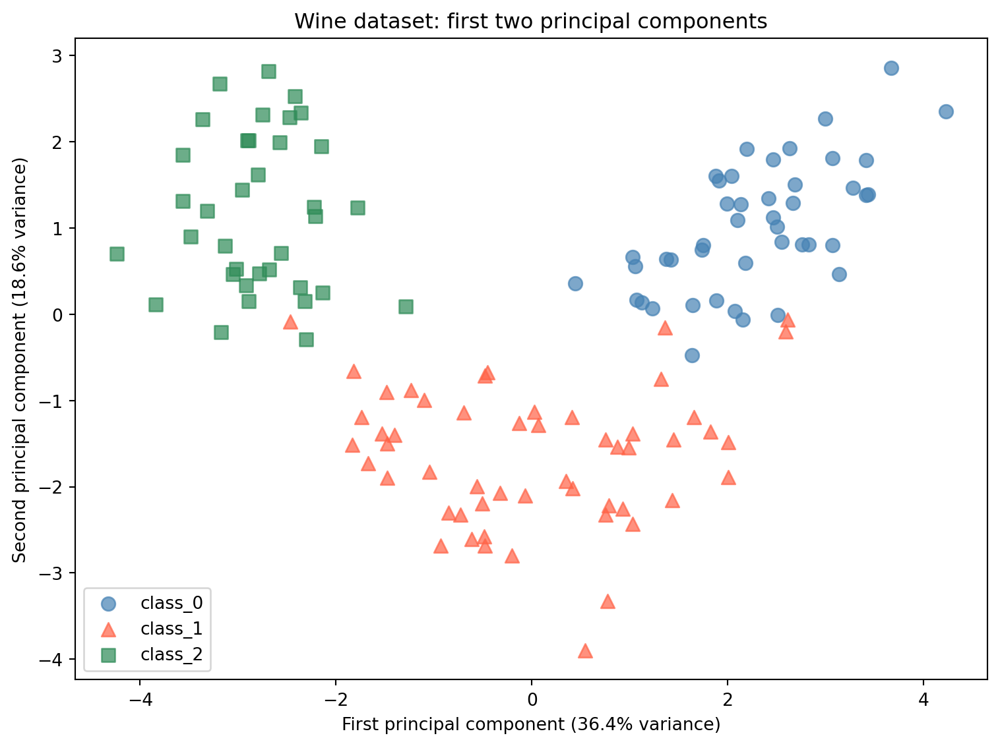

Week 10 introduced preprocessing as the step that happens before training. You applied StandardScaler and MinMaxScaler to the Wine dataset, saw the accuracy cost of skipping scaling, and practiced the fit-on-training rule. Week 11 asked you to apply those concepts to a new scenario without scaffolding.
This week continues with the Wine dataset and introduces a new kind of preprocessing: dimensionality reduction. Where scaling adjusts the numeric range of features, dimensionality reduction adjusts how many features you work with.
What is dimensionality reduction?
When you work with a dataset, each feature is one dimension. A dataset with two features can be plotted as a scatter plot with an x-axis and a y-axis. A dataset with three features can be plotted as a 3D scatter plot. The Wine dataset has 13 features, which means 13 axes. There is no way to plot that directly, and more importantly, working in 13 dimensions introduces a practical question: do all 13 features contribute equally useful information, or is some of that information redundant?
When two features are highly correlated, knowing the value of one tells you a great deal about the value of the other. Both features are partly measuring the same underlying property of the data. Including both does not double your information. It introduces redundancy.
Dimensionality reduction is the process of finding a compact representation of your data that retains as much of the important variation as possible while using fewer features. The reduced representation is easier to visualize, faster to work with, and can sometimes improve model performance by removing noise.
Noise in the context of machine learning refers to small, inconsistent differences between samples that do not reflect meaningful patterns in the data. Low-variance features or components tend to capture noise rather than signal. Removing them can make distance calculations and other computations more reliable.
What is PCA?
Principal Component Analysis (PCA) is the most widely used dimensionality reduction method. To understand what PCA does, start with a simpler version of the problem.
Imagine you have two features that are highly correlated: as one goes up, the other tends to go up too. If you plotted them on a scatter plot, the points would form a diagonal cloud rather than filling the whole square. There is one main direction that the data is spread along, and a second direction perpendicular to it where the data is much less spread out. PCA finds those directions.
In the general case, PCA finds new directions in your feature space, called principal components, that capture the maximum variance in the data. The first principal component points in the direction of greatest variance. The second points in the direction of greatest remaining variance. Rather than describing each wine sample by its original 13 chemical measurements, PCA re-expresses each sample as a combination of these new directions. You can then keep only the first few components, which capture the most important variation, and discard the rest.
Variance is a statistical measure of how spread out values are. A feature with high variance has values that differ widely across samples. A direction of high variance in the data is a direction where samples are most spread out and therefore most distinguishable from each other.
Explained variance ratio tells you what proportion of the total variance in the dataset each principal component captures. The first component captures the most variance, the second captures the next most, and so on. The sum of all explained variance ratios equals 1.0, meaning together all components account for all the variance in the original data.
What is a correlation coefficient?
It helps to understand how correlation is measured. A correlation coefficient measures the linear relationship between two features. Values range from -1.0 to 1.0. A value of 1.0 means the two features increase together perfectly. A value of -1.0 means one increases as the other decreases perfectly. A value near 0 means the features have little linear relationship. Values above 0.6 or below -0.6 indicate a strong relationship worth paying attention to. When multiple features are strongly correlated with each other, the dataset has redundancy that PCA can compress.
Why scaling is required before PCA
PCA finds directions of maximum variance. If features are on very different scales, the features with the largest numeric ranges will dominate the variance calculation for the same reason they dominated the kNN distance calculation in Week 10. A feature measured in thousands will appear to have enormous variance compared to a feature measured in fractions, even if the smaller feature contains equally important information.
Scaling before PCA ensures that all features contribute proportionally to the variance calculation. This is not optional. Unscaled PCA will produce principal components that are driven primarily by the highest-range features rather than by the actual structure of the data.
The n_components parameter
PCA is imported from sklearn.decomposition. The key parameter is n_components, which controls how many principal components to keep. Setting n_components=2 keeps only the first two components, reducing the data to two dimensions. This is useful for visualization. Setting a higher value retains more variance at the cost of more dimensions.
The fit/transform workflow is identical to what you used with scalers in Week 10: - pca.fit(X_train_scaled) learns the principal components from the training data - pca.transform(X_train_scaled) applies the reduction to the training data - pca.transform(X_test_scaled) applies the same transformation to the test data
The fit-on-training rule applies here exactly as it did with scalers. The principal components must be learned from training data only.
What this demo covers
This demo covers:
Feature correlations in the Wine dataset and why they matter for dimensionality reduction
PCA from sklearn.decomposition: the fit/transform workflow and the n_components parameter
PCA for visualization: reducing 13 features to 2 principal components and plotting class separation
Explained variance ratio: how much information each component retains
PCA as preprocessing for kNN: accuracy comparison across different numbers of components
The textbook then shows you:
NMF (Non-negative Matrix Factorization), an alternative to PCA for non-negative data
t-SNE, a visualization technique that works differently from PCA and cannot transform new data
PCA applied to a faces dataset with image reconstruction using inverse_transform
Part 1: The Wine Dataset
This demo continues with the Wine dataset from Week 10. The dataset has 178 samples, 13 chemical features, and 3 class labels. You have already seen that its features span dramatically different numeric ranges, which made it a good demonstration of why scaling matters. Those same scale differences make it a good demonstration of why dimensionality reduction matters: when features are correlated and span different ranges, the 13-dimensional feature space contains a great deal of redundant information.
from sklearn.datasets import load_wineimport pandas as pdimport numpy as npwine = load_wine()X, y = wine.data, wine.targetdf = pd.DataFrame(X, columns=wine.feature_names)print(f"Dataset shape: {X.shape}")print(f"Number of classes: {len(wine.target_names)}")print(f"Class names: {wine.target_names}")print()print("Class distribution:")for name, count inzip(wine.target_names, np.bincount(y)):print(f" {name}: {count} samples")print()df.head()
Dataset shape: (178, 13)
Number of classes: 3
Class names: ['class_0' 'class_1' 'class_2']
Class distribution:
class_0: 59 samples
class_1: 71 samples
class_2: 48 samples
alcohol
malic_acid
ash
alcalinity_of_ash
magnesium
total_phenols
flavanoids
nonflavanoid_phenols
proanthocyanins
color_intensity
hue
od280/od315_of_diluted_wines
proline
0
14.23
1.71
2.43
15.6
127.0
2.80
3.06
0.28
2.29
5.64
1.04
3.92
1065.0
1
13.20
1.78
2.14
11.2
100.0
2.65
2.76
0.26
1.28
4.38
1.05
3.40
1050.0
2
13.16
2.36
2.67
18.6
101.0
2.80
3.24
0.30
2.81
5.68
1.03
3.17
1185.0
3
14.37
1.95
2.50
16.8
113.0
3.85
3.49
0.24
2.18
7.80
0.86
3.45
1480.0
4
13.24
2.59
2.87
21.0
118.0
2.80
2.69
0.39
1.82
4.32
1.04
2.93
735.0
Part 2: Feature Correlations
The code below computes the correlation between every pair of features and prints the pairs with correlation above 0.6.
# Compute the correlation matrixcorr_matrix = df.corr().round(2)# Show feature pairs with correlation above 0.6print("Feature pairs with correlation above 0.6:")print()high_corr = []for col_a in corr_matrix.columns:for col_b in corr_matrix.columns:if col_a >= col_b:continue val = corr_matrix[col_a][col_b]ifabs(val) >0.6: high_corr.append((col_a, col_b, val))def sort_by_abs_correlation(pair):returnabs(pair[2])high_corr.sort(key=sort_by_abs_correlation, reverse=True)for a, b, v in high_corr:print(f" {a} vs {b}: {v:.3f}")
Feature pairs with correlation above 0.6:
flavanoids vs total_phenols: 0.860
flavanoids vs od280/od315_of_diluted_wines: 0.790
od280/od315_of_diluted_wines vs total_phenols: 0.700
flavanoids vs proanthocyanins: 0.650
alcohol vs proline: 0.640
proanthocyanins vs total_phenols: 0.610
Understanding the code:
df.corr():corr() is a DataFrame method that computes the correlation coefficient between every pair of columns. The result is a square matrix where each row and column corresponds to a feature. The value at row total_phenols and column flavanoids is the correlation coefficient between those two features. Values on the diagonal are always 1.0 because every feature is perfectly correlated with itself.
The loop: The loop iterates over every pair of column names. The correlation matrix is symmetric: the value for total_phenols vs flavanoids is identical to the value for flavanoids vs total_phenols. Without a way to skip duplicates, every pair would appear twice. The if col_a >= col_b: continue line handles this by skipping any pair where the second column name is alphabetically earlier than or equal to the first. This ensures each unique pair is visited exactly once. corr_matrix[col_a][col_b] accesses the correlation value by column name, the same way you would select a column from any DataFrame. The pairs that pass the 0.6 threshold are collected into a list.
sort_by_abs_correlation and high_corr.sort:sort_by_abs_correlation is a function that takes one item from the list and returns the value to sort by. Each item in high_corr is a tuple of three values: (col_a, col_b, correlation_value). pair[2] selects the third value, which is the correlation coefficient. abs() ensures negative correlations are treated the same as positive ones for sorting purposes. Passing this function to high_corr.sort(key=...) tells Python to use it when comparing items. reverse=True sorts from largest to smallest.
What this tells us:
Six pairs of features have correlations above 0.6. The strongest is total_phenols and flavanoids at 0.865. This means wines with high total phenol content tend to have high flavanoid content. The two features are measuring overlapping chemical properties.
Notice that flavanoids appears in three of the six highly correlated pairs. It is strongly related to total_phenols, od280/od315_of_diluted_wines, and proanthocyanins. These four features are all measuring aspects of the same underlying chemical group. In 13-dimensional space, we have four features that are partly redundant with each other.
PCA will identify these overlapping directions of variation and find a more compact representation that captures the same underlying structure with fewer dimensions.
Part 3: Scaling Before PCA
PCA must be applied to scaled data. The reason is the same as in Week 10: features with larger numeric ranges produce larger variance, and PCA finds directions of maximum variance. Without scaling, PCA would be driven primarily by proline (range 1,402) and would largely ignore nonflavanoid_phenols (range 0.53).
The fit-on-training rule applies here exactly as it did with scalers. The scaler is fit on training data only, and the same training statistics are used to transform both sets.
from sklearn.model_selection import train_test_splitfrom sklearn.preprocessing import StandardScalerX_train, X_test, y_train, y_test = train_test_split(X, y, random_state=42)print(f"Training set: {X_train.shape}")print(f"Test set: {X_test.shape}")print()# Fit scaler on training data onlyscaler = StandardScaler()X_train_scaled = scaler.fit_transform(X_train)X_test_scaled = scaler.transform(X_test)print("StandardScaler fit on training data only.")print(f"Mean learned from training (first 3 features): {scaler.mean_[:3].round(3)}")print(f"Std learned from training (first 3 features): {scaler.scale_[:3].round(3)}")
Training set: (133, 13)
Test set: (45, 13)
StandardScaler fit on training data only.
Mean learned from training (first 3 features): [12.973 2.387 2.362]
Std learned from training (first 3 features): [0.827 1.095 0.28 ]
Familiar workflow:
This is the same three-step pattern from Week 10: create the scaler, fit it on X_train only, then transform both sets using the training statistics. The scaler stores the mean and standard deviation of each feature from the 133 training samples. Those same values are applied when transforming the 45 test samples.
scaler.mean_ and scaler.scale_ are attributes that store what the scaler learned during fit: the mean and standard deviation of each feature computed from the training data. Both contain 13 values, one per feature. The [:3] in the print statement selects only the first 3 values to keep the output readable. The full arrays with all 13 values are stored and used when transforming both sets.
Part 4: PCA for Visualization
The most immediate use of PCA is visualization. With 13 features, you cannot plot the full dataset. By reducing to 2 principal components, you can create a scatter plot that shows how the three wine classes are distributed in the space defined by the two most important directions of variation.
Setting n_components=2 tells PCA to keep only the first two principal components and discard the rest.
from sklearn.decomposition import PCAimport matplotlib.pyplot as plt# Fit PCA on scaled training data onlypca2 = PCA(n_components=2)X_train_pca2 = pca2.fit_transform(X_train_scaled)X_test_pca2 = pca2.transform(X_test_scaled)print(f"Original shape: {X_train_scaled.shape}")print(f"Reduced shape: {X_train_pca2.shape}")print()print(f"Variance explained by PC1: {pca2.explained_variance_ratio_[0]:.3f} ({pca2.explained_variance_ratio_[0]*100:.1f}%)")print(f"Variance explained by PC2: {pca2.explained_variance_ratio_[1]:.3f} ({pca2.explained_variance_ratio_[1]*100:.1f}%)")print(f"Total variance explained by 2 components: {pca2.explained_variance_ratio_.sum():.3f} ({pca2.explained_variance_ratio_.sum()*100:.1f}%)")
Original shape: (133, 13)
Reduced shape: (133, 2)
Variance explained by PC1: 0.364 (36.4%)
Variance explained by PC2: 0.186 (18.6%)
Total variance explained by 2 components: 0.550 (55.0%)
Understanding the code:
PCA from sklearn.decomposition:PCA is a transformer, imported from sklearn.decomposition. Like the scalers from Week 10, it uses the fit/transform pattern. fit learns the principal components from the training data. transform applies the reduction. The fit-on-training rule applies: pca2.fit_transform(X_train_scaled) fits and transforms the training data in one step, and pca2.transform(X_test_scaled) applies the same components to the test data using what was learned from training.
n_components=2: This tells PCA to keep only the first 2 principal components. The original 13 features become 2 new features. The data goes from shape (133, 13) to shape (133, 2). The values in these two new columns are not named chemical measurements. Each value is the coordinate of that wine sample along the corresponding principal component. A value of 2.5 in the first column means that sample is 2.5 units along the direction of maximum variance. The actual numbers have no direct chemical interpretation, but their relative positions to each other are what determines how samples cluster in the scatter plot.
explained_variance_ratio_: This attribute is available after fitting. It is an array with one value per component, showing what fraction of the total variance in the dataset that component captures. PC1 captures 36.4% of the total variance, PC2 captures 18.6%, and together they capture 55.0%. The remaining 45.0% of variance is in the 11 components we discarded.
Now plot the training samples in the 2-component PCA space:
# o = circle, ^ = triangle, s = squarecolors = ['steelblue', 'tomato', 'seagreen']markers = ['o', '^', 's']fig, ax = plt.subplots(figsize=(8, 6))for i, (name, color, marker) inenumerate(zip(wine.target_names, colors, markers)): mask = y_train == i ax.scatter( X_train_pca2[mask, 0], X_train_pca2[mask, 1], c=color, label=name, marker=marker, alpha=0.7, s=60 )ax.set_xlabel('First principal component (36.4% variance)')ax.set_ylabel('Second principal component (18.6% variance)')ax.set_title('Wine dataset: first two principal components')ax.legend()plt.tight_layout()plt.show()

Reading the plot:
The scatter plot shows all 133 training samples projected onto the first two principal components. The three wine classes separate clearly in this two-dimensional space. class_0 (blue circles) clusters toward the right. class_2 (green squares) clusters toward the left. class_1 (red triangles) falls in the middle with some overlap.
This separation was found without using the class labels. PCA only looked at the feature values, not the wine cultivar. The fact that the classes separate in PCA space means the chemical properties that differ most between wine cultivars happen to align with the directions of maximum variance in the data.
Now look at the full picture of how variance is distributed across all 13 components:
# Fit PCA with all components to see full explained variancepca_full = PCA()pca_full.fit(X_train_scaled)cumulative_variance = np.cumsum(pca_full.explained_variance_ratio_)print("Explained variance by component:")print(f"{'Component':<12}{'Individual':>12}{'Cumulative':>12}")print("-"*38)for i, (ind, cum) inenumerate(zip(pca_full.explained_variance_ratio_, cumulative_variance)):print(f"PC{i+1:<10}{ind:>11.1%}{cum:>11.1%}")
PCA() with no argument: When PCA() is called without specifying n_components, it keeps all principal components. For a dataset with 13 features, this produces 13 components. This is useful here because we want to see the full breakdown of explained variance across all components before deciding how many to keep in Part 5.
np.cumsum:np.cumsum is a NumPy function that computes the cumulative sum of an array. It adds each value to the running total of all previous values. For example, if the input is [0.364, 0.186, 0.119], the output is [0.364, 0.550, 0.669]. Applied to explained_variance_ratio_, it gives the total variance captured by the first 1, 2, 3 components and so on. This makes it easy to see how many components are needed to reach a target level of retained variance.
Reading the table:
The first two components capture 55.0% of the total variance. The first five capture 81.1%. To capture 95% of the variance, you need 10 components. This means that 10 out of 13 dimensions are enough to represent 95% of the variation in the dataset. The last 3 components together contribute only 4.7%.
This is what feature correlation produces. When features overlap in what they measure, the distinct information they collectively carry can be compressed into fewer dimensions without losing much.
Part 5: PCA as Preprocessing for kNN
Beyond visualization, PCA can be used as a preprocessing step before training a supervised model. By reducing the number of features, you remove dimensions that contribute little information and may contain noise. This can improve model accuracy and reduce training time.
Here we compare kNN accuracy on the original 13 scaled features against kNN accuracy on PCA-reduced data with different numbers of components. This shows how the choice of n_components affects accuracy and what the tradeoff looks like between variance retained and dimensions used.
from sklearn.neighbors import KNeighborsClassifier# Baseline: kNN on all 13 scaled featuresknn_baseline = KNeighborsClassifier()knn_baseline.fit(X_train_scaled, y_train)baseline_acc = knn_baseline.score(X_test_scaled, y_test)print(f"kNN baseline (13 scaled features): {baseline_acc:.3f}")print()# kNN accuracy at different component countsprint(f"{'Components':<12}{'Variance Explained':>20}{'kNN Accuracy':>14}")print("-"*48)for n in [2, 3, 5, 8, 10]: pca_n = PCA(n_components=n) X_tr_pca = pca_n.fit_transform(X_train_scaled) X_te_pca = pca_n.transform(X_test_scaled) knn_n = KNeighborsClassifier() knn_n.fit(X_tr_pca, y_train) acc = knn_n.score(X_te_pca, y_test) var = pca_n.explained_variance_ratio_.sum()print(f"{n:<12}{var:>19.1%}{acc:>14.3f}")
For each value of n_components, a new PCA object is created, fit on the scaled training data, and used to transform both sets. The fit-on-training rule applies here just as it did with the scaler: pca_n.fit_transform(X_train_scaled) learns the principal components from training data only, and pca_n.transform(X_test_scaled) applies those same components to the test data.
Reading the results:
With just 2 principal components capturing 55.0% of the variance, kNN achieves 0.978 accuracy, which is higher than the 0.956 baseline on all 13 scaled features. Adding a third component (66.9% variance) produces the same result. At 5 components and above, accuracy matches the baseline exactly.
The 2-component result is counterintuitive at first. How can using less information produce better accuracy? The answer is that the 11 discarded components are not simply neutral. They capture mostly noise: small, inconsistent differences between samples that do not reflect meaningful patterns in the data. When kNN computes distances across all 13 features, those noisy dimensions add random variation to every distance calculation, making it harder to reliably identify the closest neighbors. Removing the noisy components leaves kNN with a cleaner signal, and the distance calculations become more meaningful.
This does not mean fewer components are always better. The right number of components depends on the data and the algorithm. The table shows that for this dataset, the useful signal is concentrated in the first 2 or 3 components, and adding more does not improve accuracy because the additional components carry mostly noise.
Conclusion
Key Takeaways
Dimensionality reduction finds compact representations of data. When features are correlated, the dataset contains redundant information. PCA identifies the directions of maximum variance and re-expresses each sample in terms of those directions. Keeping only the most important directions produces a smaller dataset that retains most of the useful variation.
Scaling is required before PCA. PCA finds directions of maximum variance. Without scaling, high-range features dominate the variance calculation and the principal components reflect scale differences rather than meaningful structure. Always scale before applying PCA.
PCA uses the same fit/transform workflow as scalers. Fit on training data only. Transform both training and test sets using the components learned from training. The fit-on-training rule applies here exactly as it did with StandardScaler and MinMaxScaler.
Explained variance ratio measures how much information each component retains. PC1 captured 36.4% of the total variance in this dataset. The first two components together captured 55.0%. The first 10 captured 96.2%. Understanding the explained variance ratio helps you choose a reasonable value for n_components.
PCA can improve model accuracy by removing noise. On the Wine dataset, kNN on 2 PCA components (0.978) outperformed kNN on all 13 scaled features (0.956). Discarding the low-variance components removed noise from the distance calculations and made nearest-neighbor comparisons more reliable.
PCA is unsupervised. Like the scalers from Week 10, PCA.fit takes only X_train, never y_train. It finds structure in the feature data without using class labels.
Further Reading in the Textbook
As you read Chapter 3, pages 140-165, pay attention to:
NMF (Non-negative Matrix Factorization)
An alternative to PCA that requires all feature values to be non-negative. Like PCA it reduces dimensionality, but the components it finds have a different interpretation. Worth reading to understand when PCA is not the right choice.
t-SNE
A dimensionality reduction method designed specifically for visualization. Unlike PCA, t-SNE cannot transform new data after fitting. It is used to explore the structure of a dataset visually but cannot be used as a preprocessing step for a supervised model.
PCA on the faces dataset
The textbook applies PCA to a dataset of face images, showing how principal components can be visualized as eigenfaces and how reconstructing images from increasing numbers of components reveals what information each component captures.
inverse_transform
A method on the PCA object that rotates the reduced data back into the original feature space. Used in the textbook for image reconstruction. Useful for understanding what information was lost during dimensionality reduction.
The demo demonstrated PCA on a familiar dataset and showed why it works. The textbook provides additional algorithms, a deeper mathematical treatment, and applications to image data that reveal the structure of principal components more concretely.